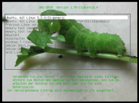
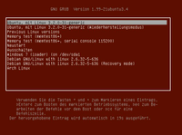
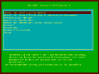
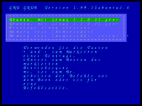

Aussehen - einfache Konfiguration
Dieser Artikel wurde für die folgenden Ubuntu-Versionen getestet:
Ubuntu 14.04 Trusty Tahr
Zum Verständnis dieses Artikels sind folgende Seiten hilfreich:
Über die hier vorgestellte Methode wird das Aussehen des GRUB 2-Menüs über bereits vorhandene Konfigurationsdateien vorgenommen. Folgende Änderungen sind möglich:
Einstellen eines eigenen Hintergrundbildes
Einstellen einer Hintergrundfarbe
Ändern der Schriftfarben
Ändern der Schriftart/-größe (eingeschränkt)
Hinweis:
Alle Einstellungen können nur mit Root-Rechten [1] durchgeführt werden. Nach jeder Änderung muss GRUB 2 aktualisiert werden.
Hintergrund¶
Eigene Hintergrundbilder für das GRUB 2-Menü müssen in einem der Formate .jpg, .png oder .tga vorliegen. Als Speicherort ist dafür standardmäßig /boot/grub oder /usr/share/images vorgegeben. Es kann aber auch ein anderes Verzeichnis gewählt werden.
Hinweis:
Das Bild muss zur Bootzeit von GRUB 2 erreichbar sein. Bei verschlüsselten Systemen ist der Speicherort entsprechend zu wählen.
Nicht passende Bilder werden automatisch skaliert. Für die Ladezeit ist es aber von Vorteil, wenn das Bild gleich in der richtigen Auflösung vorliegt.
Bild¶
|  |
| Hintergrundbild mit angepassten Schriftfarben |
Um ein eigenes Hintergrundbild zu definieren, ergänzt man die Datei /etc/default/grub um folgende Zeile:
| Zeile | Bemerkung |
export GRUB_BACKGROUND="/boot/grub/images/bildname.jpg" | Datei muss während des Bootens erreichbar sein. |
Wenn man bei der Aktualisierung eine Meldung wie
"Found background image: Mein_Hintergrund.jpg"
bekommt, sollte nach dem nächsten Neustart des Systems das Hintergrundbild zu sehen sein.
Hintergrundfarbe¶
|  |
| Hintergundfarbe |
Möchte man lediglich die Hintergrundfarbe ändern, editiert man die Datei /lib/plymouth/themes/default.grub bzw. /usr/share/plymouth/themes/default.grub und ändert den Wert hinter background_color. Farbangaben können im Format R,G,B (rot, grün, blau) erfolgen. Für nebenstehendes Bild wurden folgende Werte verwendet:
1 2 3 | if background_color 94,14,0; then clear fi |
Farbwerte können mit einem Bildverarbeitungsprogramm oder über SelfHTML  ermittelt werden.
ermittelt werden.
Schriftfarben¶
| Verfügbare Farben | |||
| white | light-gray | ||
| dark-gray | black | ||
| red | light-red | ||
| yellow | brown | ||
| green | light-green | ||
| blue | light-blue | ||
| cyan | light-cyan | ||
| magenta | light-magenta | ||
|  | |||
Für Schriftfarben ergänzt man die Datei /etc/grub.d/40_custom. Es werden immer Farbpaare in der Form "Vordergrundfarbe/Hintergrundfarbe" verwendet. Die erste Angabe stellt die Schriftfarbe ein, der zweite Wert hat unterschiedliche Auswirkungen:
black: Der Hintergrund ist transparent. Ein Bild oder die eingestellte Hintergrundfarbe bleibt erhalten.Andere Farbangabe: Die entsprechenden Bereiche werden mit dem Farbwert gefüllt.
Hinweis:
In neueren Versionen von Grub 2, welche nach Ubuntu 12.04 Verwendung finden, müssen die beschriebenen Einträge in der Datei /lib/plymouth/themes/default.grub vorgenommen werden.
Zur Veranschaulichung der Bereiche wurde das Bild unterhalb der Farbtabelle mit der Hintergrundfarbe braun versehen und die Schriftfarben folgendermaßen gewählt:
| Zeile | Bemerkung | |
set color_normal="yellow/green" | Die Farbwerte für Texte außerhalb des Boot-Menüs. Schriftfarbe gelb, der Bereich um das GRUB 2-Menü herum wird grün eingefärbt. Außerdem werden Untermenüs wie 'Erweiterte Optionen' mit dieser Textfarbe dargestellt, wenn man dort heinein wechselt. | |
set menu_color_normal="yellow/cyan" | Normale Menüzeilen und der Rahmen in gelb. Die Hintergrundfarbe des Boot-Menüs ist cyan. | |
set menu_color_highlight="light-green/black" | Ausgewählte Menüzeile. Durch die Angabe von black (Transparent) als zweiten Wert wird die eingestellte Hintergrundfarbe angezeigt. | |
set color_highlight="light-gree/black" | Die Farbwerte für die ausgewählte Menüzeile in Untermenüs. Wenn nicht gesetzt, wird hier ein Standardwert eingestellt. |
Schriftart und Größe¶
Die Standardschriftart im GRUB 2-Menü ist /usr/share/grub/unicode.pf2 und nennt sich „Unknown Regular 16“. Der Zahlenwert gibt die Größe in Pixel an.
Wie man eine eigene Schriftart erstellt, wird im Artikel GRUB 2/Aussehen im Abschnitt Schriftarten erläutert.
Hinweis:
Die Schriftart-Datei muss zur Bootzeit von GRUB 2 erreichbar sein. Bei verschlüsselten Systemen ist der Speicherort entsprechend zu wählen.
Andere Schriften verwenden¶
|  |
| Eine andere Schriftart |
Es gibt zwei Möglichkeiten, eine Schriftart für das GRUB 2-Menü einzustellen.
Achtung!
Eigene Schriftarten für das GRUB 2-Menü zu verwenden kann dazu führen, das falsche Zeichen für den Rahmen des Bootmenüs oder Grafikfehler in der GRUB-Shell angezeigt werden. Im schlimmsten Fall kann GRUB 2 abstürzen! Eine Reparatur ist dann nur noch über ein Live-System möglich. Eigene Schriftarten sollten vorab ausgiebig in einer Testumgebung ausprobiert werden!
Eine zusätzliche Schriftart laden¶
Diese Methode ist zu empfehlen, da fehlende/falsche Zeichen in der eigenen Schriftart durch die GRUB 2-eigene Schriftart ersetzt werden.
Man editiert/ergänzt die Datei /etc/grub.d/40_custom mit folgender Angabe:
1 | loadfont "/PFAD/ZUR/SCHRIFTDATEI.pf2"
|
Damit lädt man die eigene Schriftartendatei zusätzlich zur Standardschrift. Die zuletzt geladene Datei wird zur Anzeige verwendet.
Die Standardschrift ersetzen¶
Man kann eine Schriftart auch über /etc/default/grub durch die Angabe von
1 | GRUB_FONT="/PFAD/ZUR/SCHRIFTDATEI.pf2" |
setzen. Damit wird nur diese eine Schriftart in GRUB 2 verwendet.
Links¶
GRUB 2/Aussehen
 Übersicht zum Thema Gestaltung
Übersicht zum Thema GestaltungGRUB 2/Aussehen - erweiterte Konfiguration - Volle grafische Kontrolle über das GRUB-Menü
GRUB 2
Übersichtsartikel
- Erstellt mit Inyoka
-
 2004 – 2017 ubuntuusers.de • Einige Rechte vorbehalten
2004 – 2017 ubuntuusers.de • Einige Rechte vorbehalten
Lizenz • Kontakt • Datenschutz • Impressum • Serverstatus -
Serverhousing gespendet von